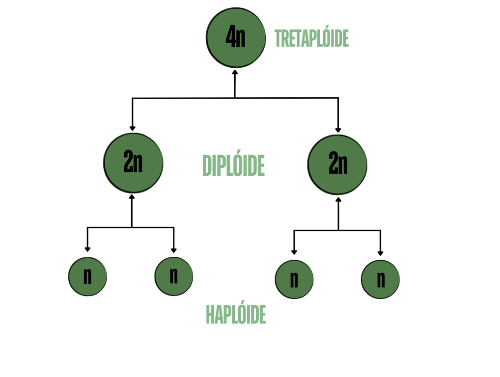

A interfase é a duplicação dos cromossomos da célula (2n). Durante esse processo, a célula realiza a replicação do DNA e cresce, se tornando, por pouco tempo, uma célula tetraplóide (4n), em seguida retorna a célula diplóide (2n) fazendo uma divisão dupla, preparando-se para uma próxima divisão celular, onde o número de cromossomos é reduzido pela metade e gera quatro células-filhas haplóides (n).
